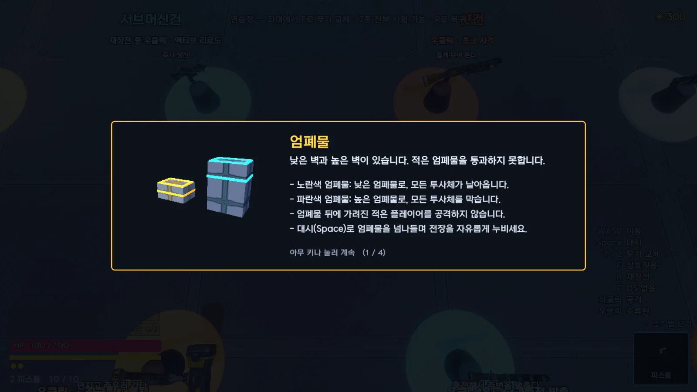
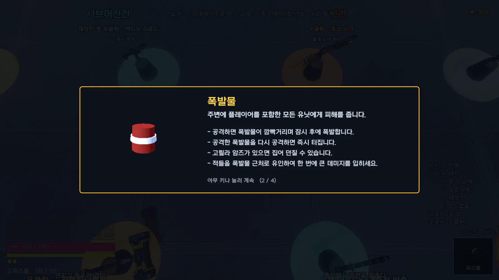
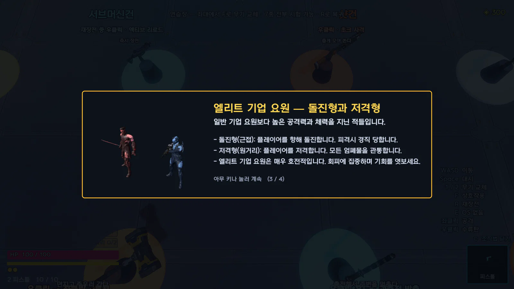

개요 기획서
EDGE
RUNNERS
사이버펑크 2077을 탑다운 로그라이트로 재구성한 게임.
빌드를 만들고 방마다 시험하며 적 웨이브를 처치함.
장대규
1인 개발, Godot 4.7.2, 2026.08.21 – 10.21
개요 기획서
사이버펑크 2077을 탑다운 로그라이트로 재구성한 게임.
빌드를 만들고 방마다 시험하며 적 웨이브를 처치함.
장대규
1인 개발, Godot 4.7.2, 2026.08.21 – 10.21
01 게임 개요
장르
탑다운 액션 로그라이트
플랫폼
PC, 웹 브라우저
엔진
Godot 4.7.2
개발
1인, 2026.08.21 – 10.21 (62일)
시점
위에서 내려다보는 카메라 (피치 -72°)
한 판
튜토리얼(첫 판만), 시설, 방 12개, 휴식방, 보스
레퍼런스
Cyberpunk 2077과 Edgerunners(세계, 의체), Hades(방 선택, 영구 강화)

EDGERUNNERS 개요 기획서
02
02 핵심 재미

사이버웨어 8부위 32종, 프로토타입 9종, 무기 8자루를 조합함.
같은 사이버웨어를 다시 얻으면 레벨 상승(최대 Lv3).

문에 적힌 보상을 보고 다음 방을 선택함.
방마다 적 조합과 장치가 달라 같은 빌드도 매번 다른 상황에서 시험됨.

웨이브마다 적 7~9명 등장.
모든 공격에 예고가 있어 보고 회피 가능함. 빌드 조합이 맞으면 여러 적을 한 번에 처치함.
EDGERUNNERS 개요 기획서
03
01 레벨 제작 과정

손그림
엄폐물, 전기 함정, 보상 위치를 색으로 구분함.
그림 아래에 의도한 플레이를 기록함.

격자 도면
맵 편집기에서 한 칸 2m 격자로 옮김.
20×15칸이 그대로 40×30m 방이 됨.

실제 플레이
편집기에서 Enter 입력 시 방을 그 자리에서 다시 생성해 바로 전투를 시험함.
EDGERUNNERS 레벨 기획서
02
06 첫 런의 등장 순서
1
엄폐물
벽
2
폭발물
3
속성 적
메딕
4
드론
5
엘리트
6
??? 방
7
8
전기 함정
9
10
11
12

1 엄폐물
총알을 막는 곳과 시야를 가리는 곳의 구분.

2 폭발물
지형지물의 무기 활용.

5 엘리트
공격 예고를 보고 회피.

8 전기 함정
전기 함정 위 장시간 체류 불가.
장치를 처음 만나면 실제 모델을 3D로 띄운 설명창이 1회 표시됨.
등장 순서는 첫 런에만 적용함. 보스를 한 번 처치하면 첫 방부터 모든 장치가 나옴.
EDGERUNNERS 레벨 기획서
07